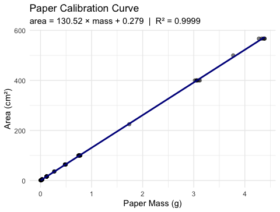

Predicting leaf area from paper tracing mass (Whitlock & Schluter Ch. 17)
2026-09-01
.qmd file holds your writing and your code, and renders to Word, HTML, or PowerPoint`r `format: docx with toc and number-sections gives a professional documentNote
✅ Transition
You can now build a reproducible report. Today’s analysis — a calibration curve that converts leaf weight into a more meaningful measurement, leaf surface area (cm²) — is the perfect thing to write up in one. The activity gives you this same analysis as both a plain .R script and a Quarto report, so you can feel the difference.
lm() and read every line of summary()predict() to make predictions with intervalsmutate() to add model results to a data frameTip
🖐 Try it yourself
By the end you will predict leaf area from a tracing weight.
Tools today:
readxl, tidyverseTextbook:
Naming conventions:
_model_plotThis lecture runs in four short chunks. After each chunk you switch to the activity and type the code yourself.
For every code block, do three things:
Note
✅ Why bother? (the evidence)
lm(area_cm2 ~ mass_g, data = paper_df) yourself, instead of pasting it, is what makes you actually notice which variable sits on which side of the ~.We will cover: the calibration idea, the equation \(\hat{Y}=a+bX\), least squares, R², and the four assumptions.
Tip
🖐 After this chunk: Activity Parts 1–3 (load, inspect, and scatter-plot the paper data).
The problem: measuring leaf surface area without a leaf area meter.
The solution — a calibration curve:
Why does this work?
Paper of uniform stock has constant area density (cm² per gram). Mass and area are therefore perfectly linearly related within a sheet.
| Known area (cm²) | n replicates |
|---|---|
| 1 | 25 |
| 4 | 32 |
| 16 | 24 |
| 36 | 3 |
| 64 | 7 |
| 100 | 14 |
| 225–567 | 12 |
Total: 118 paper squares weighed
📖 W&S §17.1, Example 17.1 (the same logic: measure X to predict Y)
Linear regression draws the best straight line through a scatter of points to predict a response variable (Y) from an explanatory variable (X).
Two key roles:
| Role | Variable | Our example |
|---|---|---|
| Explanatory (X) | on the x-axis; what you measure | mass_g |
| Response (Y) | on the y-axis; what you want to predict | area_cm2 |
X is often something easy to measure; Y is what you actually want to know. Regression gives you the equation to convert X → Y.
📖 W&S §17.1 p. 540–541
When to use regression:
Regression vs. our t-test (Lectures 09–10):
| Test | Question |
|---|---|
| t-test | Do two group means differ? |
| Regression | Does X predict Y numerically? |
Regression produces a predictive equation. The t-test produces a decision about group means.
Population model (W&S §17.1):
\[Y = \alpha + \beta X + \varepsilon\]
Sample estimate (what R calculates):
\[\hat{Y} = a + bX\]
| Symbol | Name | Meaning |
|---|---|---|
| \(\hat{Y}\) | predicted Y | estimated mean area at a given mass |
| a | intercept | predicted Y when X = 0 |
| b | slope | change in Y per 1-unit increase in X |
| \(\varepsilon\) | residual | observed − predicted |
Our equation will be: \[\widehat{\text{area}} = a + b \times \text{mass\_g}\]
Interpreting the slope:
b = the change in area (cm²) for every additional 1 gram of paper
Since 1 g ≈ 130 cm² of paper, the slope is the area density of the paper stock.
Interpreting the intercept:
a = predicted area when mass = 0
Physically this should be 0 (no paper, no area). Small non-zero values reflect measurement error.
📖 W&S §17.1 pp. 543–545
Residual for observation i:
\[e_i = Y_i - \hat{Y}_i = \text{observed} - \text{predicted}\]
The least-squares line minimizes the sum of squared residuals:
\[\text{minimize} \sum_{i=1}^{n}(Y_i - \hat{Y}_i)^2\]
Visual intuition:
Each data point has a vertical residual — the distance from the point to the regression line.
observed Y │ ● ← residual (positive)
│ |
predicted Ŷ│-----●--- regression line
│
└──────────── XA point above the line has a positive residual. A point below has a negative residual. The sum of all residuals = 0.
Note
🔮 Predict first: Paper of uniform stock has constant area-per-gram. Before you see any output, predict: will R² be near 0, 0.5, or 1?
\[R^2 = \frac{SS_\text{regression}}{SS_\text{total}} = 1 - \frac{SS_\text{residual}}{SS_\text{total}}\]
R² ranges from 0 to 1:
| R² | Interpretation |
|---|---|
| 1.00 | X explains all variation in Y |
| 0.85 | X explains 85% of variation |
| 0.00 | X explains nothing |
📖 W&S §17.4 p. 555
Our calibration data:
Because paper has uniform density, mass and area are nearly perfectly linearly related.
We expect R² ≈ 1.00.
Important: R² tells you how well the line fits the data you have. It does not by itself tell you whether the relationship is statistically significant — that requires a test of the slope.
A significant slope with a low R² is possible (weak but real relationship). In biology, R² values of 0.3–0.7 are common and meaningful.
Four assumptions must hold for the p-value and confidence intervals to be valid (W&S §17.5):
| # | Assumption | How to check |
|---|---|---|
| 1 | Linearity — Y changes linearly with X | plot(model), panel 1 |
| 2 | Independence — observations are independent | Study design |
| 3 | Equal variance — spread of residuals is constant | plot(model), panels 1 & 3 |
| 4 | Normality — residuals are normally distributed | plot(model), panel 2 + Shapiro-Wilk |
Important
Check residuals, not raw data.
The normality assumption is about the residuals (observed − predicted), not the original Y values.
R builds these diagnostic plots for you the instant you fit a model — plot() on any lm object gives you all four in one call.
📖 W&S §17.5 pp. 557–560 (Figures 17.5-1, 17.5-4)
Load paper_area_weights.xlsx, inspect it with skim(), and make the scatter of area vs mass. Predict the shape before you plot it.
We will cover: loading the data, lm(), and reading every line of summary() — slope, intercept, and R².
Tip
🖐 After this chunk: Activity Parts 4–7 (fit lm(), decode summary(), pull the equation and R²).
Note
The file paper_area_weights.xlsx contains 118 paper squares of known area (1–567 cm²) with their measured masses. This is the calibration dataset we use to predict leaf area from a tracing weight.
| Name | paper_df |
| Number of rows | 118 |
| Number of columns | 2 |
| _______________________ | |
| Column type frequency: | |
| numeric | 2 |
| ________________________ | |
| Group variables | None |
Variable type: numeric
| skim_variable | n_missing | complete_rate | mean | sd | p0 | p25 | p50 | p75 | p100 | hist |
|---|---|---|---|---|---|---|---|---|---|---|
| area_cm2 | 0 | 1 | 71.64 | 144.46 | 1 | 4.00 | 16.00 | 64.00 | 567.00 | ▇▁▁▁▁ |
| mass_g | 0 | 1 | 0.55 | 1.11 | 0 | 0.03 | 0.12 | 0.48 | 4.39 | ▇▁▁▁▁ |
# A tibble: 10 × 3
area_cm2 n mean_wt
<dbl> <int> <dbl>
1 1 25 0.00677
2 4 32 0.0299
3 16 24 0.121
4 36 3 0.269
5 64 7 0.484
6 100 14 0.760
7 225 1 1.74
8 400 6 3.07
9 500 1 3.77
10 567 5 4.35 What to look for before fitting:
Both variables are continuous and numeric → linear regression is appropriate.
📖 W&S §17.1 p. 541
lm() — the Linear Model FunctionNote
🔮 Predict first: area rises with mass. Before you read the output — will the slope be positive or negative? Roughly how many cm² per gram of paper?
Call:
lm(formula = area_cm2 ~ mass_g, data = paper_df)
Residuals:
Min 1Q Median 3Q Max
-7.2774 -0.3059 -0.1221 0.2264 8.7592
Coefficients:
Estimate Std. Error t value Pr(>|t|)
(Intercept) 0.2792 0.1812 1.541 0.126
mass_g 130.5234 0.1473 885.964 <2e-16 ***
---
Signif. codes: 0 '***' 0.001 '**' 0.01 '*' 0.05 '.' 0.1 ' ' 1
Residual standard error: 1.764 on 116 degrees of freedom
Multiple R-squared: 0.9999, Adjusted R-squared: 0.9999
F-statistic: 7.849e+05 on 1 and 116 DF, p-value: < 2.2e-16The lm() formula syntax:
lm(Y ~ X, data = df)
Y goes on the left of ~X goes on the right~ reads as “is predicted by”area_cm2 ~ mass_g means: “area is predicted by mass”summary() OutputIntercept (a) = 0.2792 cm²Slope (b) = 130.52 cm²/gDecode the Coefficients table:
| Row | What it is |
|---|---|
(Intercept) |
a — predicted area when mass = 0 |
mass_g |
b — cm² per gram of paper |
Std. Error |
uncertainty in each estimate |
t value |
b / SE — tests if slope ≠ 0 |
Pr(>|t|) |
p-value for that t-test |
H₀: β = 0 (mass does not predict area)
Hₐ: β ≠ 0 — our slope tests this hypothesis
📖 W&S §17.3 p. 551–553
R² = 0.999852 Calibration equation: area (cm²) = 130.52 × mass (g) + 0.2792 Interpretation of slope: Every 1 g of paper = 130.5 cm² of area99.99% of the variation in paper area is explained by mass. The remaining 0.01% is measurement noise from the balance.
This is expected — the relationship between mass and area in uniform paper is essentially perfect.
In biological data, R² values of 0.3–0.7 are common and meaningful.
📖 W&S §17.4 p. 555
Fit lm(area_cm2 ~ mass_g), decode the summary() table, and pull the slope, intercept, and R². Predict each number before it prints.
We will cover: the calibration curve with its CI band, and the four base R diagnostic plots + Shapiro-Wilk on the residuals.
Tip
🖐 After this chunk: Activity Parts 8–10 (plot the curve; check plot(model) and Shapiro-Wilk).
# Calibration curve with regression line + 95% CI band
calibration_plot <- paper_df %>%
ggplot(aes(x = mass_g, y = area_cm2)) +
geom_point(alpha = 0.5, size = 1.8) +
geom_smooth(
method = "lm",
se = TRUE,
color = "darkblue",
fill = "lightblue"
) +
labs(
title = "Paper Calibration Curve",
subtitle = paste0(
"area = ",
round(b_slope, 2),
" × mass + ",
round(a_intercept, 3),
" | R² = ",
round(r2_val, 4)
),
x = "Paper Mass (g)",
y = "Area (cm²)"
) +
theme_minimal()
calibration_plot
The shaded band = 95% confidence band for the mean predicted area at each mass value.
Key observation: the band is narrowest in the middle of the data range and widens at the extremes — predictions are most precise near \(\bar{X}\).
This is exactly Figure 17.2-1 from W&S (p. 549).
📖 W&S §17.2 p. 548–550
Note
🔮 Predict first: plot() on a fitted model gives you four panels at once. One of them is a QQ plot — what do you predict the other three will show?
No extra code needed. Once you have a fitted lm object, plot() already knows how to diagnose it.
| Panel | Name | Checks |
|---|---|---|
| 1 | Residuals vs Fitted | linearity, equal variance |
| 2 | Normal Q-Q | normality of residuals |
| 3 | Scale-Location | equal variance (another view) |
| 4 | Residuals vs Leverage | influential points |
What to look for:
📖 W&S §17.5 p. 557–560 (Figures 17.5-1, 17.5-4)
Remember:
📖 W&S §17.5 p. 559
Plot the calibration curve, then run plot(model) and Shapiro-Wilk on the residuals. Predict each diagnostic before you run it.
We will cover: turning a tracing mass into a predicted area, predict() with confidence vs prediction intervals, and writing the results paragraph.
Tip
🖐 After this chunk: Activity Parts 11–12 (predict leaf area; write the results paragraph).
Note
🔮 Predict first: The sunny tracing weighs 0.092 g, the shady 0.138 g. Before running — which predicts the larger area, and does that match “shady leaves are bigger”?
# Plug tracing masses into the calibration line -------
# Suppose sunny leaf tracing weighs 0.092 g
# and shady leaf tracing weighs 0.138 g
mass_sunny <- 0.092
mass_shady <- 0.138
area_sunny <- b_slope * mass_sunny + a_intercept
area_shady <- b_slope * mass_shady + a_intercept
cat("Sunny tracing mass:", mass_sunny, "g\n")Sunny tracing mass: 0.092 gPredicted area: 12.29 cm²Shady tracing mass: 0.138 gPredicted area: 18.29 cm²The equation in action:
\[\widehat{\text{area}} = 130.5 \times \text{mass} + 0.28\]
For a sunny tracing at 0.092 g:
\(130.5 \times 0.092 + 0.28 = 12.3\) cm²
For a shady tracing at 0.138 g:
\(130.5 \times 0.138 + 0.28 = 18.3\) cm²
This matches our confirmed result from Lectures 09–10 — shady leaves are significantly heavier and, now, larger in area too!
predict() needs the exact predictor column name. I’ll get it wrong:
R errors:
Error in eval(predvars, data, env) :
object 'mass_g' not foundThe fix — match the model’s variable name exactly:
Tip
✅ Why show a broken run?
predict() looks for the same column names the model was built on. “object ‘mass_g’ not found” means your newdata is missing that column — almost always a typo. This is the #1 predict() mistake.
predict() — with Prediction Intervals fit lwr upr
1 12.287 11.940 12.635
2 18.291 17.948 18.634 fit lwr upr
1 12.287 8.777 15.798
2 18.291 14.782 21.801Two types of interval (W&S §17.2 p. 549):
| Type | Predicts | Width |
|---|---|---|
| Confidence | mean area for all leaves this mass | narrower |
| Prediction | area of one specific leaf | wider |
For predicting a single leaf, use the prediction interval — it captures individual-to-individual variation within the same mass class.
📖 W&S §17.2 pp. 548–550
--- Results paragraph ---Paper mass was a strong predictor of paper area(linear regression: F( 1 , 116 ) = 784932.9 ,p < 5e-224 , R² = 0.9999 ).The calibration equation is: area = 130.52 × mass + 0.279 cm²(slope 95% CI: 130.23 to 130.82 cm²/g)Standard report format:
“Paper area was accurately predicted from paper mass (linear regression: F(df₁, df₂) = F, p < 0.001, R² = 0.9999). The regression equation was area = 130.5 × mass + 0.28 (slope 95% CI: X to Y cm²/g).”
Always include:
📖 W&S §17.3 p. 553
Predict leaf area from tracing mass, compare confidence vs prediction intervals, and write your results paragraph. Predict the numbers before they print.
Concepts:
R skills:
lm(Y ~ X, data) — fits the modelsummary() — extracts slope, intercept, R², p-valuescoef(), fitted(), residuals() — pull model componentsplot(model) — all four diagnostic plots in one callpredict(model, newdata, interval = "prediction") — predictions with uncertaintygeom_smooth(method = "lm", se = TRUE) — plot the line with CI bandChapter references:
Up next — Lecture 12:
GSODRlm() to estimate a rate of change over time